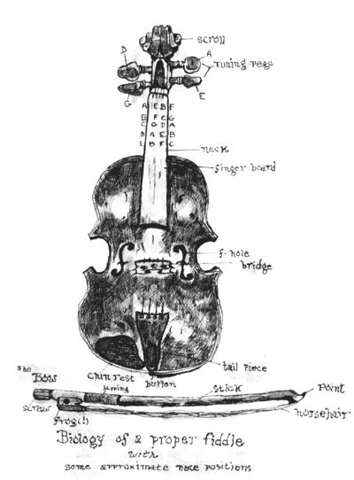
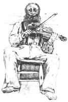

Finding and fixing an old-time fiddle.
THE MOANING, LONESOME wail of the country fiddle has graced American homesteads for centuries, from the peaks of the Blue Ridge to the Louisiana bayou. It is a wonderful, expressive instrument that you can have fun teaching yourself to play.
Now, a super-slick contest fiddler (and there are plenty of contests) might tell you that it takes an expensive, exceptional instrument to sound good. That's fine for him but it doesn't mean much to the man back in the sticks. In fact, my wife gave me an inexpensive instrument with a full, resonant tone that's earned me compliments from a classical violinist! Speaking of tone, a fullsize (violins come in full, three-quarter, and one-half sizes), high-sided fiddle will generally have the full, foot-stomping sound most people associate with fiddling, while smaller, more delicate instruments possess a more "conservative" quality. When searching for your fiddle, knowing the kind of sound you want really helps.
Just as important as tonal quality is your choice of a bow. Most country fiddlers "choke up" on a standard-size bow. That is, they ignore classical discipline and slide their bowing hand way up in order to master the fast, sweeping licks that country fiddling demands. Although this is a comfortableenough approach, many fiddlers find themselves with their hands a full one-third the way up the bow! For this very reason, many people (myself included) choose to buy a three-quarter- length bow. These bows alleviate the need to choke up and are available anyplace that carries fiddles.
A small cake of rosin rubbed generously along the bow's horsehair is necessary to get the proper friction and tonal quality. The powdery white dust from the freshly rosined hair will collect under the strings of your fiddle and, although it's not absolutely necessary to clean this resin, many people prefer to keep the necks of their instruments clean. In old, hard times, many fiddlers allowed the rosin to collect heavily on the fiddle's neck and recycled it by rubbing the bow hair through the dust as needed. Rosin was darned hard to come by, and reusing it was a good, practical idea. Some still adhere to that method, but I keep my fiddle spotless and waxed since too much resin accumulation will eat up my varnish.
Other basic necessities include a good bridge that sits level and straight on the instrument. (Some bluegrass fiddlers even file down the rounded top in order to make playing double stops-fiddling two strings at oncea lot easier.) If you're buying a used fiddle, make sure the tuning pegs fit good and tight and that the neck is unwarped or "hollowed out" from the firm pressing of fingertips over the years.
Naturally, you'll need a set of decent strings to get a good sound, and there are a lot of different brands and types. Both gut and steel strings are available, but due to the easy breakability, short life, subdued sound, and high cost of the gut string, the steel type is far and away the most popular with country fiddlers. I don't use the little "mufflers" that come with most strings (they go on top of the bridge, under each string) because I like a fairly loud, vibrant tone. Select wisely though: The way you'll sound depends greatly on which equipment you choose.
Any regluing, removing of cracked pieces, etc. on the fiddle will necessitate a trip to your nearest music shop or instrument craftsman, if you are fortunate enough to know one. When the horsehair on your bow has broken considerably, you will need to have it rehaired by a skilled repairman, a job that should cost about $10. Keeping the hair clean and just tight enough (not too tight) to get a good tone will save a lot of stress on your bow. When your tuning pegs begin to slip, you will probably have to replace them-an inexpensive chore. A broken bridge will, of course, have to be replaced. Always make sure that the feet of the bridge rest level on the fiddle body. Strings will occasionally break no matter what you do, but avoiding excess temperature changes and tuning them properly (again, not too tight) will greatly extend their life. Probably the best all-round deterrent against most major repairs is a sturdy, lined case-it really provides a great amount of protection.
If you live anywhere in North America, there has to be a fiddlers' convention or bluegrass festival within a reasonable distance. At a good festival, you can hear a full day of good music, including some of the finest professional fiddlers alive, for just a few dollars. What has amazed me is that when you meet famous bluegrass playerspeople who have probably been playing longer than your lifetime-they are as warm and humble as your next-door neighbor. Many get-togethers will feature instructional workshops conducted by professionals volunteering their time and knowledge. The dedication of these traditional musicians is almost unbelievable.
For more information regarding country fiddle playing, contact:National Old-Time Fiddlers' Association c/o Wes Nivens P.O. Box 1427 Truth or Consequences, NM 87901
|
 |
 |
|